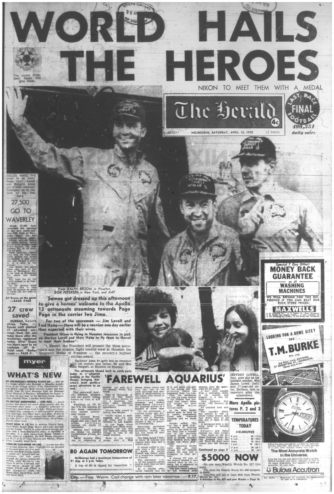
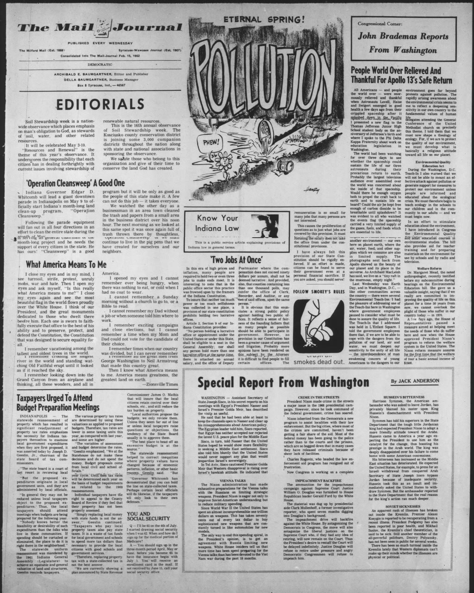

HN HN-677 · April 29, 1970 · Science, Invention & Technology > Astronomy & Space Exploration > Human spaceflight
Source: The Mail-Journal, p. 7 — original page; NASA, Apollo 13 mission details.
Report: A congressional column by John Brademas described public anxiety and relief after Jim Lovell, Fred Haise, and Jack Swigert returned safely from a crippled spacecraft on April 17.
Assessment: The rescue is verified; the cause came from a separate technical investigation. An explosion in a service-module oxygen tank on April 13 ended the lunar landing attempt, and NASA later identified electrical and thermal failures involving the tank system. The celebratory column does not itself diagnose the hardware.
Identity-review candidate peers: HN-661:Algorithmic
Authentic images retrieved from Vax80 Flickr collection (Melbourne Herald page scan) and Hoosier State Chronicles (Indiana State Library). Article crops are located using the archive's own OCR word coordinates and rendered at native crop resolution; article clips are assembled from the archive's own article-block images; page images marked "archive tiles" are stitched from the archive's own tiled page service at its 256-px tile cap; page images marked "issue PDF" are single pages rasterised from the archive's own issue PDF, with the page chosen by matching the headline against the PDF's text layer; page scans are reduced-size access renditions. No images were generated, mocked, or retouched.


Not yet acquired. Queued for provider-specific acquisition testing (see source-acquisition manifest).
URL (preserved verbatim): https://newspapers.library.in.gov/?a=d&d=TMJ19700429.1.7
Saved research report: Historical_Newspaper_Event_Research_653-677_2026-10-23.md
Evidence note: A newspaper report means a historical publication made a claim; it does not establish that claim as fact. Contemporary reporting is separated from later scholarly context and our own assessment.